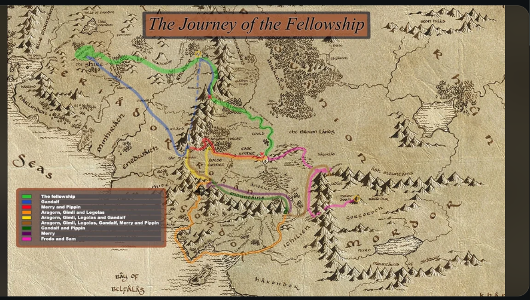

Začátek cesty
„Cesta pokračuje stále dál. Od dveří, kde začala…“
„Ne každý, kdo bloudí, je ztracen.“
Prozkoumej místa, která utvářela osud Třetího věku, a zapiš vlastní kroky do největší výpravy všech dob.
Prozkoumat mapu →Interaktivní mapa
Klikni na místo a odhal jeho příběh

Nacházíš se: Kraj
Kalkulačka výpravy
Každý krok se počítá. Zadej vzdálenost, kterou jsi urazil, a zjisti, kam až bys došel na cestě Froda a Sama.
Záznamy poutníků
„Cesta pokračuje stále dál. Od dveří, kde začala…“
„Zde je mé srdce, ale cesta volá dál na východ.“
Vzduch je těžký a cesta kamenitá. Přesto každý krok stojí za to.